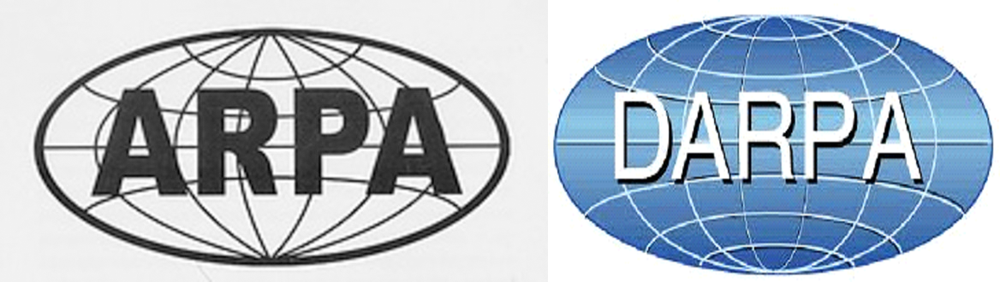

📋 Resumo
A União Soviética e os Estados Unidos disputavam cada centímetro de avanço científico, tecnológico, político e espacial. Mas naquele ano, um acontecimento específico provocou um abalo profundo nos bastidores do governo americano: o lançamento do Sputnik, o primeiro satélite artificial da história, colocado em órbita pela União Soviética em outubro de 1957. O barulho do “beep-beep” transmitido do espaço foi ouvido como um grito de alerta. Para os Estados Unidos, o Sputnik significava mais do que um feito científico soviético — simbolizava que o inimigo tinha capacidade tecnológica para lançar mísseis balísticos intercontinentais, e que os EUA estavam perdendo a corrida pela supremacia científica.
📚 Detalhes
O impacto psicológico e político foi tão forte que muitos historiadores comparam o efeito do Sputnik ao ataque de Pearl Harbor. A sensação nos EUA era de vulnerabilidade e atraso. Em discursos públicos, jornais e conversas internas, crescia o temor de que a União Soviética avançasse primeiro em tecnologias de criptografia, computadores, radares, defesa aérea e principalmente sistemas espaciais capazes de alterar o equilíbrio estratégico mundial. Era preciso reagir rápido — e reagir de forma radical.
Foi nesse clima de emergência científica que nasceu a ARPA, mais tarde conhecida como DARPA (Defense Advanced Research Projects Agency). Criada oficialmente em 1958 pelo presidente Dwight D. Eisenhower, a agência tinha um mandato simples e extremamente amplo: impedir que os Estados Unidos fossem surpreendidos novamente por uma inovação tecnológica inimiga. A ARPA não era uma agência comum. Enquanto outras instituições do governo tinham burocracias pesadas e processos lentos, a ARPA foi desenhada para ser o oposto disso: rápida, experimental, ousada, aberta a ideias arriscadas e capaz de financiar projetos que nenhum setor privado se atreveria a bancar. Em certa medida, a ARPA foi criada para pensar o “impossível”. Sua função era apoiar pesquisas visionárias que pudessem garantir a superioridade tecnológica americana por décadas. Não importava que um projeto fosse incerto, caro ou estranho — se tivesse potencial de revolucionar o futuro, a ARPA podia investir. Essa filosofia de risco calculado, somada ao clima tenso da Guerra Fria, abriu espaço para ideias extremamente avançadas, incluindo computadores interconectados, sistemas distribuídos, inteligência artificial e até projetos espaciais experimentais.

Ao longo de 1958 e início da década de 1960, a ARPA organizou grupos de pesquisa em universidades como MIT, Stanford e UCLA para trabalharem em temas considerados estratégicos. O que pouca gente sabe é que, nesse período inicial, a ARPA não estava interessada em “internet”, porque o conceito ainda nem existia. O que ela queria era algo muito mais simples e ao mesmo tempo muito mais ambicioso: um sistema de comunicação capaz de continuar funcionando mesmo que partes dele fossem destruídas em um ataque nuclear. O medo de uma guerra atômica influenciava cada decisão. O Pentágono temia que, em um cenário de guerra, suas linhas telefônicas, antenas ou centrais de comando fossem destruídas. Era preciso imaginar uma rede de comunicação que não dependesse de um único ponto central. O problema era que nos anos 1950 todas as redes eram centralizadas. Telefones dependiam de centrais físicas; computadores não conversavam entre si; dados eram transportados em fitas e cartões perfurados; e não existia nenhuma forma eficiente de comunicação digital distribuída. A ideia de conectar diversas máquinas espalhadas pelo país, permitindo que os dados encontrassem rotas alternativas caso algum caminho fosse destruído, parecia quase ficção científica. Mas exatamente por parecer impossível é que a ARPA se interessou. Com orçamento praticamente ilimitado, autonomia e liberdade acadêmica, a ARPA começou a financiar estudos sobre sistemas computacionais distribuídos.
Pesquisadores como J. C. R. Licklider, um psicólogo e cientista da computação do MIT, começaram a elaborar visões ousadas sobre “bibliotecas intergalácticas” de computadores e comunicação digital interativa. Suas ideias, escritas em memorandos internos no começo dos anos 1960, foram essenciais para convencer a ARPA de que computadores poderiam ser mais do que máquinas isoladas; poderiam formar redes inteligentes.
Mesmo que a ARPA tenha se tornado famosa nas décadas seguintes por criar a ARPANET, seu papel inicial nos anos 1950 foi muito mais amplo: ela reorganizou a ciência americana. Instituiu uma nova forma de fazer pesquisa — descentralizada, interdisciplinar, financiada rapidamente e com metas de longo prazo. Foi graças à ARPA que universidades tiveram recursos para construir laboratórios de protótipos, contratar pesquisadores e avançar em temas como computação interativa, processamento de sinais, engenharia de software, sistemas de defesa e comunicação digital.
Um fato interessante é que a cultura da ARPA era completamente diferente da cultura militar tradicional. Pesquisadores trabalhavam com enorme liberdade, não usavam uniformes, tinham acesso direto a decisores e podiam propor ideias sem medo de rejeição. Essa estrutura informal fez com que jovens cientistas extremamente criativos tivessem espaço para propor soluções radicais. A ARPA funcionava como um “laboratório nacional invisível”: espalhado pelo país, sem prédios próprios, mas com enorme influência. Em termos culturais, podemos perceber que essa época até hoje alimenta obras de ficção científica. O medo nuclear, a corrida espacial, a espionagem e a tecnologia emergente moldaram imaginários que aparecem em filmes como “Dr. Fantástico” (1964), “Ponte dos Espiões” (2015) e nas histórias de ficção científica de Isaac Asimov e Arthur C. Clarke. Para quem quer ver a atmosfera científica e militar desse período, o documentário “Cold War Tech Race” da PBS é uma excelente visão geral do clima de paranoia e inovação científica. A criação da ARPA em 1958 não gerou a internet imediatamente, mas criou as condições necessárias para que ela surgisse anos depois. Sem ela, seria impossível financiar o tipo de pesquisa que criou a ARPANET. Sem ela, pesquisadores como Licklider, Lawrence Roberts e Vint Cerf jamais teriam as equipes e o suporte para experimentar redes de computadores. Sem ela, não haveria os IMPs, o packet switching, o TCP/IP e a filosofia de descentralização que guia a internet até hoje. Assim, 1958 se torna um marco essencial porque representa o momento em que o governo americano percebeu que o futuro seria decidido pela tecnologia da informação. A internet, quando finalmente nascesse, seria filha desse ambiente de medo geopolítico, imaginação científica e investimento estratégico. A DARPA não só financiou a criação da primeira rede de computadores da história — ela inventou a cultura de inovação que moldou todo o século XXI.
Documentário da PBS – “Cold War Tech Race”
PBS: https://www.pbs.org/
.Museu Nacional do Ar e do Espaço Smithsonian – Materiais de arquivo sobre tecnologia da Guerra Fria
Materiais: https://airandspace.si.edu/collection-archive
.Arquivos Nacionais dos EUA – Coleções de Defesa da Guerra Fria
Arquivos: https://www.archives.gov/research/foreign-policy/cold-war
.🔗 Fontes de Pesquisa